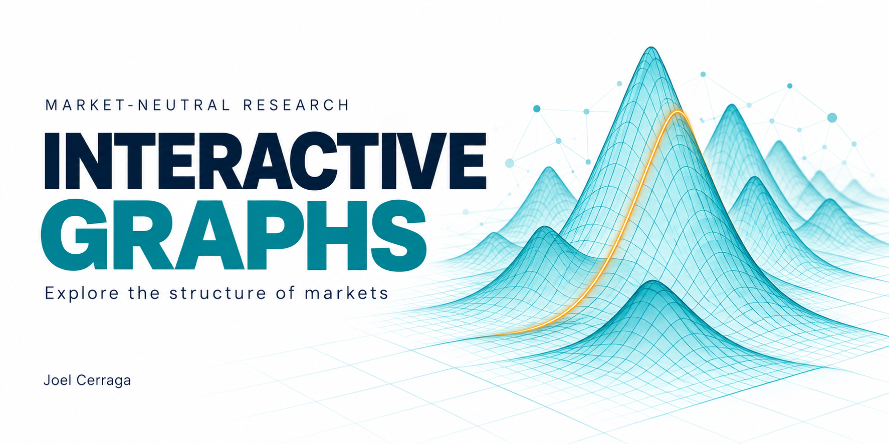
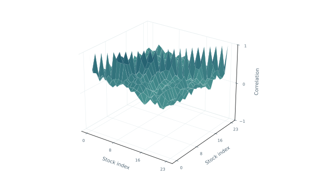
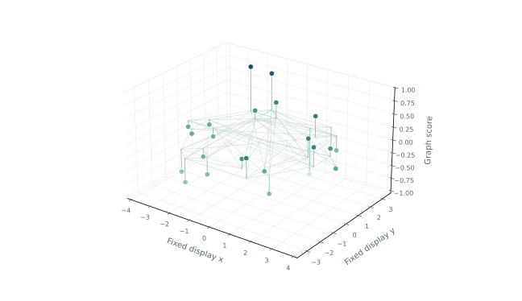
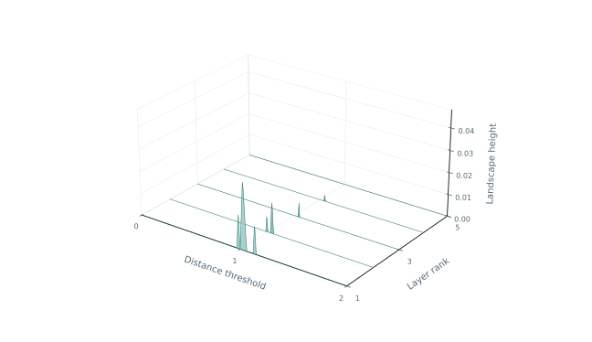
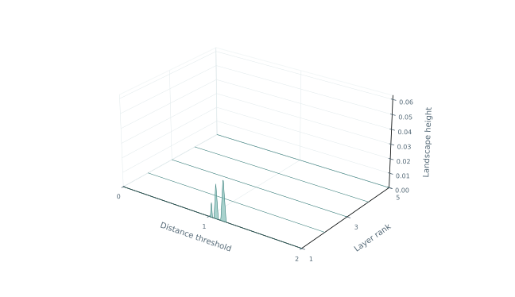

The interactive companion
Explore the structure
of markets.
Four dedicated explorers connect the research method to its visual evidence. Choose a view, rotate it and follow the monthly sequence.


Correlation surfaceHistorical correlations
Rotate the full correlation matrix and follow 120 monthly snapshots of the same 24-stock basket.

Network & signalGraph diffusion
Inspect the stock network, observed shocks and graph-smoothed scores before portfolio constraints are applied.

Topology / developmentPersistence landscapes
Explore ranked persistence layers alongside the birth–death diagram for each monthly asset cloud.

Topology / final testFinal-test landscapes
Explore 72 final-period landscapes using the frozen construction and the original stock basket.
How to read these views. A correlation surface shows co-movement; a graph score explains a proposed signal; a persistence landscape describes geometry. None of these heights is a forecast probability. The final trading results remain negative after the declared costs.